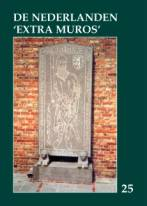

> nieuwsbrief > 21e jg. - 3e trimester
2003
| Bijdragen over: | Tip |
De Nederlanden
extra muros deel 25
Ons nieuwe jaarboek
kende overal een heugelijk onthaal. Met zijn 320 paginas oogt het bovendien
robuust, terwijl de Zannekin-gedenksteen (van Lampernisse) de kaft op
passende wijze siert. Onze lezers blijken bovendien bijzonder goed bekend te
zijn met de aandachtsgebieden van ZANNEKIN: tot driemaal toe werden we
ondertussen attent gemaakt op de lapsus die te lezen staat op p. 189. Bij de
betiteling van de illustratie aldaar werd de foto van het centrum van Echternach
foutief als Luxemburg geduid. Waarvoor onze excuses!
De
gedrukte versie van deze Nieuwsbrief
werd ook, bij wijze van prospectie, toegestuurd aan een aantal nieuwe
adressen. Wij bieden hen graag de mogelijkheid het nieuwe jaarboek waarvan
verder in deze Nieuwsbrief een uitgebreide inhoudsoverzicht te
verwerven tegen de ledenprijs van 26 EUR. Deze ledenprijs geldt tot einde juli
ook voor wie via deze electronische Nieuwsbrief met ons kennis maakt.
Ontmoetingsdag
Op zaterdag 4
oktober 2003 zijn we met onze Ontmoetingsdag te gast in het
Zuid-Vlaamse Sint-Omaars. Noteer alvast de datum.
Enkele persoonlijkheden uit Duinkerke hebben een
petitie ingediend, ondertekend door 2000 personen, bij de
volksvertegenwoordigers en conseillers généraux van hun arrondissement,
teneinde het Vlaams (bedoeld is uiteraard het Frans-Vlaams) te laten
erkennen als regionale taal. De Franse minister van Nationale Opvoeding,
Luc Ferry, heeft al gezegd dat hiervan geen sprake kan zijn omdat het
Vlaams slechts een dialectische variant is van het Nederlands. Wat
weliswaar juist is. Maar toch lijkt het ons dat het Vlaams (zowel uit Frans- als
uit Belgisch-Vlaanderen) niet verloren mag gaan omwille van zijn rijke en oude
woordenschat met heel wat Middelnederlandse relicten, alsook met zijn talrijke
spreekwoorden en zegswijzen. Wat mogelijk is voor het Nedersaksisch en het
Limburgs moet dat ook zijn voor het Vlaams.
Namen
Einde februari werd in de Grote Aula van de
Faculté de Philosophie et Lettres in Namen de inaugurale rede gehouden voor de
cursus in het Letzeburgs. De Deken van de Faculteit, Manfred Peters, sinds 1956
professor te Namen, en Rector Michel Scheuer verwelkomden er de Minister van
Cultuur van het Groot-Hertogdom, Mevr. Erna Hennicot-Schoepges en dit in
aanwezigheid van talrijke leden van het Luxemburgse diplomatieke corps. M.
Peters herinnerde er de aanwezigen aan dat het Letzeburgs sedert 1984 officieel
als landstaal in het Hertogdom erkend is en dat het door ongeveer 400.000
personen gesproken wordt. Deze taalcursus (30 lessen) zal gegeven worden door de
Luxemburgse professor Mevr. Claudine Moulin, voorheen professor te Bamberg in
Duitsland.
Picardië
Nadat vorig jaar al een eerste conferentie
doorging in Saint-Quentin, wordt dit jaar de cyclus over de Picardische taal
verder gezet met vier voordrachten:
op 11 april spreekt J.M. Braillon te
Abbeville over Les noms des lieux dorigine picarde en Picardie
op 23 mei te Amiens, J. Leclercq over Le
roman en picard
op 24 mei F. Beauvy te Creil over La littérature de lOise en langue picard
en om te besluiten, opnieuw in Abbeville, met
Aperçus du théatre en picard, hier et aujourdhui door J.M. François.
Wij kunnen ons slechts verheugen over de
belangstelling die dit onderwerp geniet. Vergeten wij niet dat in Frankrijk
enkele tientallen regionale talen werden verdrongen door het Frans, dat
tenslotte maar de taal was van lîle de France! (Bron: Delta, mei, 2003.)
Studie-uitstap Westmunsterland
De traditionele studie-uitstap in het voorjaar
van Zannekin bracht ons dit jaar naar het Westmunsterland. Doel ervan was aan te
tonen dat deze streek, alhoewel staatkundig nooit behorende tot de Nederlanden,
in cultureel opzicht een overgangsgebied, een transitzone is. Vooreerst is daar
het wel erg opvallende dubbeldorp Dinxperlo-Süderwick (= Zuiderwijk), waar de Süderwickse
kleuters (D) school lopen in het Nederlandse Dinxperlo. Het stadhuis van Bocholt
dan weer is een duidelijke mengeling van Westfaalse bouwstijl en invloeden uit
de Nederlanden, waarbij de namen van Vredeman de Vries en vooral Lieven de Key,
die ook het stadhuis van Leiden bouwde, nooit ver weg zijn. De invloed van de
Nederlandse Renaissance, zelfs van de Antwerpse bouwstijl (stadhuis, Floris de
Vriend) is duidelijk zichtbaar, méér nog dan in het Bremense het geval is. Bij
het kasteel van Raesfeld is het al niet anders. Was daar immers niet ene Michael
van Gent (Michiel de Gand, Michael a Gandavo, Michael Gandensis
) aant
werk?
In het geheel van de reeds talrijke
voorjaarsuitstappen van Zannekin was deze reis in elk geval een topper.
Het mooie lenteweertje zal daar ook wel voor iets tussen gezeten hebben zeker?
Bron: Delta, juni 2003.

Zannekin-jaarboek 25 (2003)
Het 25e ZANNEKIN-jaarboek
kreeg, als jubileumjaarboek, niet minder dan 320 paginas toebedeeld. Is
de omvang dus ruimer, dan geldt dit ook voor het aantal territoria extra
muros waaraan aandacht kon worden besteed.
In Burgers
verlaat al wat Frans is
! De houding van de Kortrijkzanen tegenover de
Fransen 1792-1801 bestudeert Hadewich Cailliau aan de hand van enkele
cruciale bronnen hoe in Kortrijk gereageerd werd op de Franse bezetter tijdens
voornoemd decennium.
In feite vormt
het verhaal omtrent De aanhechting van het Noordenaan Frankrijk een
verhaal dat zich over meerdere eeuwen uitstrekt. Marten Heida sprokkelde
de scharnierpunten ervan samen tot een handzaam overzicht van het Franse
imperialisme ten koste van de Nederlanden.
De Unies van
Atrecht en Utrecht vormen zo wordt wel eens gezegd de aanvang van de
scheiding tussen de noordelijke en de zuidelijke Nederlanden. Leo Rienks ging
na in hoever deze gevestigde mening overeenstemt met de historische
werkelijkheid.
Johan van
Herreweghe is de man die voor
ons de actualiteit en ook wat daar boven uit stijgt in de gaten houdt in
zijn Kroniek de Franse Nederlanden. Ook het afgelopen jaar kende hoogte-
en dieptepunten die het waard zijn gememoreerd te worden.
In Het
Walenland en de Nederlanden gaat Maurits Cailliau andermaal op zoek
naar de rijke verscheidenheid binnen wat gemeenzaam de Romaanse provincies
genoemd worden. Daarbij komen, naast de historische verbondenheid, ook aspecten
als de meerledigheid van het gewest en de migratie vanuit de Nederlandstalige
gebieden aan bod.
Aan één van die
aspecten wordt meer uitgebreid aandacht besteed door Erik Martens. In
zijn bijdrage over de Taalstrijd in het Arelerland besteedt hij niet
alleen aandacht aan het taalgegeven, maar ook aan enkele verdienstelijke figuren
wiens naam het waard is gememoreerd te blijven.
Het Groothertogdom is slechts wat rest van het historische Luxemburg dat
territoria verloor aan zijn imperialistische buren. Als randgebied van de
Nederlanden speelde het niettemin een cruciale rol in de geschiedenis van de
Nederlanden. Marten Heida schets De weg van Luxemburg doorheen de
geschiedenis.
Een niet te
versmaden gedeelte van het Waalse gewest is niet eens Waalstalig. In Het
Picardisch: een vergeten taal besteedt Alain Mouton aandacht aan deze
grensoverschrijdende streektaal en haar territorium.
De betreurde Friedrich
Gorissen die ooit het woord voerde op onze eerste Ontmoetingsdag
droeg zijn Nederlandse hart op de rechte plaats. Daarvan getuigt zijn Tussen
Amsterdam en Brussel. Cultuurhistorische opmerkingen tot een excursie naar de
Duitse Nederrijn.
We blijven in de
buurt van de Nederrijn met "... den wijdberoemden en geleerden Heer
Henricus Gualtherus Eskes, kanonik te Rees..." van de hand van Wim
van Heugten, wiens degelijkheid we reeds kennen sedert de publicatie van
zijn gids over het Land van Kleef.
Met Zeno Kolks
kan onze jaarboekredactie bogen op een gedegen kunstkenner. In zijn Invloed
van de Nederlandse kunst in het aangrenzende Duitse gebied (de Graafschap
Bentheim en het West Munsterland) komt voornamelijk de bouwkunst aan bod.
Met Johan
Winkler: de Friese Groot-Nederlander van Pieter Jan Verstraete leren
we andermaal een verdienstelijke figuur uit de Friese Beweging kennen. Een
voorman die bovendien thuis was en publiceerde over de Nederlandse
territoria extra muros.
In een jubileumjaarboek als dit kon een bijdrage rond het ons cultureel verwante
Zuid-Afrika niet ontbreken. Met Pieter Geyl in Zuid-Afrika. Op bezoek bij
mensen van het Afrikaner cultureel reveil kweet Marcel Bas zich
voortreffelijk van die taak.
____________________
N.a.v. het 25e
Zannekin-jaarboek De Nederlanden extra muros, Ieper, 2003, 320 pp.,
ill., ISBN 90-71326-19-5. Ledenprijs: 26 EUR; Niet-leden: 29 EUR + 3 EUR
verzendkosten.
Als je in de avond van je leven bent aangekomen en dan de moeite neemt eens in de achteruitkijkspiegel te kijken ontdek je van er vanuit je verleden lijnen lopen die sturing aan je leven hebben gegeven. Zo ben ik van jongsafaan vertrouwd geweest met het fenomeen tweetaligheid. En dat had zeker niet alleen betrekking op het duo Fries-Nederlands. In mijn vroegste jaren was dat nog meer het tweetal Fries-Stellingwerfs. Gezien de ligging van mijn geboortestreek (Gemeente Lemsterland) ten opzichte van Stellingwerf werd dat bij ons Overtjongsters
genoemd. In het verleden waren nogal wat arbeiders van over
de Tjonger om den brode ze vonden werk in de veenderij uitgeweken naar
het gebied ten noorden van deze rivier.
In
mijn kleuterjaren had mijn vader die alleen het werk op de boerderij niet
aankon een arbeider die Overtjongers sprak. Waarom hij met deze man altijd
in zijn dialect sprak, heb ik nooit begrepen. Als kleine jongen die nog niet
naar school hoefde er was in mijn jonge tijd nog geen kleuterschool was
ik veel bij de mannen en nam met het grootste gemak Stellingwerfse woorden
in mijn mond.
Mijn
tweede ervaring met tweetaligheid zou ik opdoen in 1953 en wel in mijn eerste
standplaats als onderwijzer. Dat was in het dorp Opende in het Westerkwartier
van Groningen. Inderdaad Opende; dit dorp ligt op het end van de
provincie Groningen als het ware weggedrukt tegen de grens met Friesland maar
wel duidelijk van deze provincie gescheiden. De weg die pal langs de grens loopt
heet tot op de dag van vandaag De Scheiding.
Echter
in taalopzicht was er geen sprake van scheiding. De taalgrens liep in een
noord-zuidrichting zo ongeveer dwars door het uitgestrekte dorp. In het
westelijk deel werd overwegend Fries gesproken en in het oostelijke de
Westerkwartierse variant van het Gronings. Heel duidelijk werd deze
verscheidenheid weerspiegeld in het gezin waar ik de eerste maanden in de kost
ben geweest. Hij sprak Fries en werd door de kinderen met Heit aangesproken en
zij Westerkwartiers en werd Mama genoemd.
In
1956 verhuisde ik inmiddels getrouwd en een dochter rijker geworden naar
het Drentse dorp Nieuwlande dat gelegen is halverwege Hogeveen en Coevorden. Was
in Opende sprake van een aardrijkskundige tweetaligheid, in dit dorp was
het de sociale structuur van de samenleving die de tweetaligheid accentueerde.
Nieuwlande is in de jaren tussen 1910 en 1920 ontstaan op ontveende grond en
gesticht door voor het merendeel uit de Groningse veenkoloniën afkomstige
boeren. Zij namen uiteraard hun taal mee wat tot gevolg had dat op de
boerderijen Gronings gesproken werd en nog wordt terwijl de arbeiders
hun streektaal bezigden: een variant van het Drents.
Wat
dit alles met Frans-Vlaanderen te maken heeft? Ik heb het later gezien als een
soort van vóór-programmering van datgene waarmee ik in dit zuidelijkste deel
van de Nederlanden te maken kreeg. Daar heeft natuurlijk ook toe bijgedragen het
tienjarig verblijf in het Zeeuws-Vlaamse dorp Zaamslag. Hier maakte ik kennis
met een streektaal die me geholpen heeft een open oor te hebben voor de
taal van het gewest dat inmiddels al meer dan drie eeuwen de directe band met de
Nederlandse cultuurtaal moet missen.
Dit
opschrift heeft niets te maken met het geboorteproces van onze oudste dochter.
Nee, het heeft betrekking op mijn eerste publieke pennevrucht. In 1961 werd ik
hoofd van de Gereformeerde Lagere School in het Zeeuws-Vlaamse Zaamslag. De
school werd bevolkt door kinderen die afkomstig waren uit Christelijke
Gereformeerde, Synodaal Gereformeerde en Vrijgemaakt Gereformeerde gezinnen. In
deze laatste groep gezinnen was het Gereformeerd Gezinsblad het lijfblad.
Hoofdredacteur was het Tweede Kamerlid Jongeling. Deze man had grote
belangstelling voor dat stukje Nederlands taalgebied in Noord-Frankrijk en
schreef daar van tijd tot tijd een hoofdartikel over dat mij dan via kinderen in
handen werd gespeeld.
Ik
had mij ondertussen laten betrekken bij de activiteiten van het Komitee voor
Frans-Vlaanderen door daarvan deel te gaan uitmaken. De vraag die ik mij bij
herhaling stelde was: Op welke wijze kan ik mij dienstbaar maken voor de
Frans-Vlaamse zaak? De naamsverandering van de daarstraks genoemde krant bracht
mij op een idee. Rond de jaarwisseling van 1967-68 was de redactie verhuisd
van Groningen naar het meer centraal gelegen Amersfoort, ter gelegenheid van dit
feit had men de krant de naam Nederlands Dagblad gegeven.
Zowel
deze nieuwe naam als het feit dat de hoofdredacteur belangstelling koesterde
voor Frans-Vlaanderen heeft mij ertoe aangezet mijn beoogde dienstbaarheid
gestalte te geven door het plegen van mijn eerste artikel. Mijn keus was
gevallen op de Duinkerkse dichter Michiel de Swaen. Onder het opschrift De
Zuidnederlandse Vondel heb ik het na er een Kerstvakantie op hebben
zitten zwoegen de redactie toegezonden. Het bleek in goede aarde gevallen te
zijn; in de krant van zaterdag 3 februari 1968 stond mijn eerste schrijfsel
zwart op wit in de krant afgedrukt.
Van
mijn leerlingen kreeg ik knipsels overhandigd waardoor ik in staat gesteld werd
het artikel aan vrienden in Vlaanderen toe te zenden. Eén daarvan was André
Demedts; hij reageerde per kerende post met een buitengewoon bemoedigende brief.
Voor mij is dit schouderklopje aanleiding geweest op de nu ingeslagen weg
voort te gaan. Het was mij nu duidelijk dat ik mij op deze wijze dienstbaar kon
maken voor de zaak die velen met mij zo na aan het hart lag. Gedurende een
periode van 25 jaar heb ik mijn medewerking aan genoemd dagblad mogen en kunnen
verlenen. Van lieverlede breidde het aantal belangstellingsvelden zich in de
loop van de jaren steeds meer uit. Ook andere delen van de Nederlanden die in
het verleden buiten onze nationale grenzen waren komen te liggen mocht ik binnen
het gezichtsveld van de lezerskring brengen.
In
1993 kwam er een eind aan deze medewerking als gevolg van het besluit voortaan
meer beroepskrachten te willen inschakelen om zo jonge mensen een kans te geven
zich in de journalistiek te kunnen bekwamen. Ik heb met dit besluit geen moeite
gehad temeer daar ik inmiddels meerdere spreekbuizen tot mijn beschikking
had waaronder het ZANNEKIN-jaarboek en de Nieuwsbrief. Ik hoop
dat het mij gegeven mag worden dat ik mij ook in de komende jaren op deze wijze
kan blijven inzetten voor de zaak waarbij ik mij zeer betrokken voel en die tot
op de dag van vandaag doel aan lijn leven geeft.
Het
oranje boekje (bis)
In
de vorige Nieuwsbrief (p. 25) vestigden we de aandacht op een uitgave van
de Stichting Taalverdediging. Dit oranje boekje bundelt niet
minder dan 1000 vertalingen van vaak onnodig gebruikte - Engelse en
Amerikaanse woorden en uitdrukkingen. De uitgever maakt er ons attent op dat dit
boekje ook vanuit België kan besteld worden, namelijk door overmaking van 4 EUR
(inclusief verzendkosten) op de KBC-rekening 733-0128072-62 t.n.v. A. Braamkolk
te Eindhoven, met de titelvermelding k heb u lief, mijn Nederlands.
Marten Heida
Prins
Willem-Alexanderpark 53
NL. 3905 CB Veenendaal
De gevolgen van de Tachtigjarige Oorlog voor de Oostelijke Nederlanden
en het Westmunsterland
Niet
minder dan drie generaties lang behoorden plundering, verwoesting,
brandschatting, moord, verkrachting en wat dies meer zij tot het leven van elke
dag binnen de landstreken die het tegenwoordige Duits-Nederlandse grensgebied
uitmaken. De bewoners van de Gelderse Achterhoek, Overijssel, het
Westmunsterland, de heerlijkheid Lembeek en de graafschappen Bentheim en
Steinfurth met hun landelijke omstreken, werden in die jaren het slachtoffer van
een niet-eindigende terreur, waarvan de gevolgen nog decennia lang na het beëindigen
van de vijandelijkheden - met de ondertekening van de Westfaalse Vrede -
merkbaar bleven. Tal van hoeves bleven nog jarenlang onbewoond, steden en
gemeenten keken op tegen een oeverloze schuldenberg, handel en nijverheid zaten
diep aan de grond.
Het te Munster
onderschreven vredesverdrag legitimeerde evenwel ook de Nederlanden als een
zelfstandige staat, maar luidde op termijn ook de scheiding in van de Gelderse
Achterhoek en de Overijsselse ruimte van het Westmunsterland.
Voor Timothy
Sodmann vormde een en ander voldoende aanleiding tot het samenstellen van een
essaybundel waarin een aantal historici bepaalde deelaspecten van de toenmalige
gebeurtenissen van meer nabij bestudeerden.
Onder de titel
"... Uns aber Fried gnedig verleihen..." schets Hans-Joachim
Behr het verloop van de Dertigjarige Oorlog als resultaat van de
betreurenswaardige vervlechting van religie en politiek, die alle betrokken
partijen in een straatje zonder einde manoeuvreerde. Na deze inleidende bijdrage
beschrijft Josef Barnekamp hoe het er in die jaren dagdagelijks aan toe ging: "Sie
hausen uebell, schlagen die Leuth und schatzen Über die massen...",
waarbij hij zijn bronnenonderzoek toespitst op Velen en Ramsdorf.
Ralf-Peter
Fuchs gaat in zijn bijdrage dieper in op de historische en gerechtelijke
betekenis van het toenmalige getuigenverhoor, dat een gedeelte van de
bewijsvoering diende te onderbouwen.
Halverwege de
16e eeuw bestonden er zeer nauwe contacten tussen de IJssel-steden (Zutphen,
Zwolle, Deventer, Kampen) en de gebieden die tegenwoordig aan de andere kant van
de grens liggen. In Enkele ontwikkelingen in en consequenties van de strijd
in het Deventer Achterland, 1568-1648 herneemt onze jaarboekauteur Paul
Holthuis zijn bijdrage als verschenen in De Nederlanden 'extra muros', 22
(2000). Op zijn bijdrage volgt de eveneens Nederlandstalige bijdrage van G.B.
Jansen over Wie betaalt het gelag? De gevolgen van het oorlogsvoeren tijdens
de Tachtigjarige Oorlog. Hij komt tot het besluit dat, toen evenzeer als
thans, overal waar zich troepen ophielden, uiteindelijk steeds de kleine man de
dupe was en mocht opdraaien voor alles waar het krijgsvolk behoefte aan had.
De diepe
wonden die de Tachtigjarige Oorlog in deze contreien sloeg, liet sporen na in
literaire teksten van de 16e tot de 19e eeuw. Henk Krosenbrink bracht ze in zijn
bijdrage Der Achtzigjährige Krieg im Achterhoek in Lied und Gedicht in
kaart. De derde Nederlandstalige bijdrage in deze verzamelbundel haalt een
ooggetuige aan. In Jonker Sweder Schele: ooggetuige van twee oorlogen
bespreken A. de Bakker, J. Grootenbroer en D. Schlüter de kroniek die de
ooggetuige over ruim veertig jaren bijhield omtrent de wederwaardigheden van
zijn familie in die troebele jaren.
In Südlohn
während des Spanisch-Niederländischen Krieges (1568-1648) ging Ulrich Söbbing
na hoe de landelijke bewoners van deze regio vanaf 1589 af te lijden hadden
onder opgelegde contributies en plunderingen door de troepen uit de garnizoenen
Groenlo en Bredevoort. Ook Ingrid Sönnert spitst haar onderzoek toe op een
strak omschreven thema, nl. Die Herrlichkeit Lembeck und des Dreissigjährigen
Krieges. Toen die oorlog in 1618 uitbrak, hadden de inwoners van die
heerlijkheid reeds ruimschoots hun deel in de oorlogsellende te torsen gekregen.
Alle aangrenzende ommelanden waren immers reeds jarenlang bij het conflict
betrokken.
Voor de
afsluitende en resumerende bijdrage aan deze verzamelbundel tekende eveneens een
van onze jaarboekredacteuren en wel Hermann Terhalle. Zijn sterk gedocumenteerde
bijdrage kreeg Der Achtzigjährige Krieg zwi-schen dem König von Spanien und
den Niederlanden in seinen Auswirkungen auf des Westmünsterlandes an Beispielen
tot titel. Tot de zwaartepunten van zijn onderzoekingen behoort o.m. de
overvallen van zowel Spaanse als Nederlandse troepen op het Westmunsterland. In
zijn bronnenbijlagen komen o.m. becijferingen omtrent de oorlogsschade op de
verschillende "fronten" veroorzaakt door de respectievelijke troepen
aan bod.
Maurits
Cailliau
_______________________
N.a.v. Timothy
SODMANN (Hrsg.), 1568-1648. Zu den Auswirkungen des Achtzigjährigen Krieges
auf die östlichen Niederlande und das Westmünsterland. Landeskundliches
Institut Westmünsterland, Quellen und Studien, Band 10, 2002, geb. , ill., 248
pp., ISBN. 3-927851-95-7. Prijs: 15.00 Euro. Besteladres: Kreis Borken,
Fachbereich Kultur, Burloer Strasse 93, D. 46325 Borken. E-post:
t.wigger@kreis-borken.de
J. H. van
Tongeren, Maarssen
Filips aanzien was
door zijn huwelijk met Margaretha van Male aanzienlijk toegenomen. Van zijn
grootmoeder had hij de graafschappen Artesië en Bourgodië (Vrij Graafschap of
Franche-Comté) geërfd, evenals van zijn grootvader het hertogdom Bourgondië.
Van zijn moeder had hij de graafschappen Boulogne/Bonen en Auvergne te
verwachten en van zijn schoonvader het graafschap Vlaanderen. Helaas overleed
hij op het kasteel Rouvre, zijn geboorteplaats, bij Dijon op 21 november 1361.
Filips
graafschappen Boulogne/Bonen en Auvergne kwamen aan Jan van Bonen, de graaf van
Montfort. Artesië werd toebedeeld aan de dochter van koning Filips V,
Margaretha, die sedert 1346 weduwe was van de Vlaamse graaf Lodewijk van Nevers.
Zij deed haar Blijde Intrede in Bethune op 8 juni 1362. Na haar dood op 9 mei
1382 kwam haar zoon Lodewijk II van Male aan de macht en daarna Margaretha II,
die in 1369 met Filips de Stoute, hertog van Bourgondië was getrouwd.
Op 8 augustus 1386 ruilde Filips de Stoute met
Willem van Namen, Bethune in voor Sluis maar in 1420/1 kreeg Filips de Goede
alsnog het graafschap Namen en Bethune.
Jeanne d'Harcourt,
de tweede vrouw van Willem van Namen werd Vrouwe van Bethune en het kasteel van
Bethune werd haar residentie waar zij tot haar dood op 16 februari 1455, woonde.
Nu kwam Bethune in handen van Karel de Stoute, die het op 15 juni 1467
samenvoegde met Vlaanderen.
Na de dood van
Karel de Stoute op 6 januari 1477, vond twee maanden daarna, vlak bij de stad
een veldslag plaats tussen Lodewijk XI en Vlamingen (Slag van Esquerdes), en na
een kort beleg werd de stad door de Fransen ingenomen en kreeg ze in 1479 een
Frans garnizoen.
Op 23 december 1482
werd de Vrede van Atrecht tussen Maximiliaan van Oostenrijk en Lodewijk XI
gesloten, maar in 1487 begonnen de Fransen weer opnieuw met hun
veroveringstochten en namen Terwaan en St.-Omaars in, en als tegenreactie kwam
Filips van Kleef, natuurlijk wel ten koste van de bevolking, met zo'n 3000 man
de Fransen weer de stuipen op hun lijf jagen, Op 23 mei 1493 werd dan de
zoveelste vrede, ditmaal in Senlis getekend en na de bevestiging van dit verdrag
te Parijs op 18 juli 1498 kwam Bethune weer terug in Bourgondische handen en kon
in 1499 de Blijde In-trede van Filips de Schone in Bethune plaatsvinden. En na
weer een ander verdrag van Senlis (5 juli 1499), kwam er voor een korte tijd van
rust in het land.
Na het uitbreken
van de zoveelste oorlog tussen Frankrijk en Spanje, kwam Bethune zo
langzamerhand in de frontlinie te liggen. In in 1645 nam Gaston d'Orléans, de
broer van Lodewijk XIII, na een beleg tussen 23 augustus en 29 augustus, de stad
in.
Bethune werd door
het Verdrag van Nijmegen in 1678 bij Frankrijk ingelijfd en de stad werd
versterkt door Vauban, maar daar Vauban haast overal in de veroverde gebieden
vestingwerken ontwierp, kon hij onmogelijk overal zelf zijn en kreeg zijn neef
Dupy-Vauban, gouverneur van de stad van 1704 tot 1713 het toezicht op het
bouwen, maar daar niets eeuwig is
werden de fortificaties in 1867 weer ontmanteld.
In 1709-1713 werd
de stad door de gezamenlijke legers van Engelsen en Hollanders ingenomen, maar
de Vrede van Utrecht in 1713 gaf Bethune weer terug aan Frankrijk.
Het kasteel
en de omwalling
Het kasteel, in 940
vermeld en in 1211 door Daniël van Bethune heropgericht met een zeer
onregelmatig grondplan en de vroegere omwalling die zo rond 1215, gelijk met het
nieuwe kasteel werd gebouwd, is niets meer overgebleven.
Keizer Karel V
versterkte de stad, tussen 1528 en 1532, en bracht nogmaals tussen 1540 en 1548
verbeteringen aan, door middel van de modernste Italiaanse bolwerken en
bastions. Op de plattegrond van de stad van Jacob van Deventer ziet men dat men
gedeeltelijk de muren van de vroegere stadsverdedigingen had behouden.
Het kasteel werd geïntegreerd
in een door Karel V, volgens het Italiaans concept, gebouwde Citadel. Het
kasteel zelf werd in 1575, in 1578, 1710 en 1793
stukje voor stukje afgebroken om uiteindelijk in 1815, na nog een tijdje
als bastion bekend te hebben gestaan, voorgoed te verdwijnen.
Het middeleeuws
kasteel bevond zich aan de noordwestzijde van het Maarschalk Fochplein. De
Citadel van Karel V strekte zich uit tot aan de tegenwoordige publieke tuinen.
In 1551 gaf Maria van Hongarije de stad opdracht om de bebouwing binnen 400 voet
rondom de stad af te breken, en zo werd ook de St.-Vaastkerk, die zich
oorspronkelijk buiten de stad bevond, binnen de muren van de stad gebracht.
Aanvankelijk had de stad vijf, later vier stadspoorten. Deze waren de:
Porte de
Fers, of Atrechtse poort In 1792
afgebroken. Het bevond zich op de Place Georges-Clemenceau.
Porte de la
Vigne of Rivage. In 1260 vermeldt in 1440 heropgebouwd en in 1558 tot bastion
verbouwd. Het bevond zich op de Place de la République.
La Porte
Neuve of de Airepoort of Du Marais dat zich in de Rue Paul-Bert bevond, aan de
westzijde van de stad. Het werd in 1442 gebouwd en in 1552 hersteld, om in de
loop van de 17e eeuw gesloopt te worden.
La Porte du
Vivier of St Prypoort, vermeldt in de 13e eeuw en bevond zich in de Rue St. Pry.
In 1560 heropgericht.
Porte Saint André
later du Carnier. Deze poort was op de hoek van de Rue Sadi-Carnot en Rue du
Tribunal. De poort werd in 1588 gesloopt.
Een overblijfsel
van de vroegere omwalling is de St.-Ignatiustoren, dat zich in de tuin van het
College bevindt en dat uit de 16e eeuw dateert. In 1810 werd de toren verbouwd
tot kerk en werd er gekerkt tot 1877, om daarna tot watertoren van de stad te
worden verbouwd.
Kerken
Van de drie
parochiekerken was de Bartholomeuskerk het belangrijkste en dus het
rijkst uitgevoerd. Het bevond zich op de tegenwoordige Place Sévigné. In het
midden van de 11e eeuw, installeerde Robert II er zes kanunniken maar in 1207
waren er zo'n 24 kanunniken aanwezig. Waarschijnlijk is de kerk in 1137 en 1178
verbrand maar steeds opnieuw, in ieder geval tussen 1226 en 1230 opgebouwd. Ze
verbrandde in het midden van de 15e eeuw en werd in de 16e opnieuw opgebouwd en
vergroot. Het zuidertransept met crypte werd tot sacristie verbouwd. In het
begin van de 16e eeuw veranderde de
kerk zijn patroonheilige en werd de kerk het Heilig Kruis kerk genoemd. Op het
plan van 1748 staat een 13e eeuwse basilikale kerk, met een noord en
zuidtransept en een vlak koor.
De
Sint-Vaastkerk
Tijdens de vele
oorlogen tussen Karel V en Frankrijk werd in 1553 de St. Vaastkerk, dat zich
oorspronkelijk in de buitenwijk Catorive bevond, binnen de wallen van de stad
gebracht en daar opgebouwd om, zonder toren, in 1547 te worden ingewijd. De
toren, met een hoogte van 52 meter, werd tussen 1590 en 1611 gebouwd. Het was
een Vlaamse laat gotische Hallenkerk. De kerk verdween in 1918. In 1927 werd op
deze plaats de nieuwe kerk van architect Louis-Marie Cordonnier gebouwd. In de
absis is de kapel gewijd aan de H. Maagd waar zich de graftombe van de kanunnik
Pruvost, de herbouwer van de kerk na de Eerste Wereldoorlog, bevindt.
In de kerk wordt of
werd ondermeer de heilige Wilgefortis of Milfortis vereerd voor de genezing van
mentaal achterlijke kinderen.
De
gebrandschilderde ramen van de kerk tonen het leven van St. Vaast en van
Christus en zijn vervaardigd door Charles Champigneulle, glazenier te Bar-le-Duc,
dezelfde glazenier die de prachtige ramen met de slag van Bouvines in de kerk
van Bouvines had gemaakt.
In de
rechterzijbeuk vinden wij het altaar van de confrérie des Charitables de
Saint Eloy. Links zien wij Germon de Beuvry en Gathier de Bethune, de stichters.
De geschiedenis van deze stichting kunt u lezen in de eerdere bijdrage van Leo
Camerlynck (in Zannekin-Nieuwsbrief, nr. 2/2002).
St. Pry
Buiten de stad aan
de tegenwoordige Boulevards du Maréchal-Leclerc en Jean-Moulin lag een klooster
en kapel gewijd aan St. Pry. Volgens de traditie zou de kapel in de 10e eeuw
zijn gesticht en in 957 door Herman, de heer van Bethune zijn hersteld.
Praejectus was
bisschop in Clermont en werd te Volvic na 674 door zijn vijanden om het leven
gebracht. Zijn lichaam werd uiteindelijk naar Marcigny in Bourgondie gebracht.
Een akte van 1123 vermeldt dat een deel van het lichaam door de monniken van St.
Pry (nabij St. Quentin) naar Bethune gebracht, voor verschillende mirakels
zorgde. De relieken zijn een tijdje zoek geraakt maar op 30 augustus 1604 werd
tijdens een grote processie de reliek opnieuw naar de kerk van Saint Pry
gebracht, waar het in bewaring werd gegeven. De St.-Pry was een driebeukige kerk
en bediende ook tot 1648 het dorp Fougières tot dat het in dat jaar op bevel
van Lodewijk XIV moest worden afgebroken.
De kerk van St.-Marie
du Perroy, eveneens buiten de omwalling gelegen, werd gesticht door Robrecht le
Gros. Zijn zoon Willem 1123-1138 gaf aan de abdij van de Mont St.-Eloy
toestemming om er enkele kanunniken te instaleren. Een akte van 1181=1191
preciseert dat er geen doopvont en kerkhof was
en dat er ook geen huwelijken gesloten mochten worden. Het was dus geen
parochiekerk, maar een van de vele priorijen van de regulieren kanunniken van de
abdij Mont St.-Eloy. Naar deze kerk werd o.a. de "officiële" verering
van Sint-Wilgefortis overgebracht.
Begijnen,
kloosters, kapellen en gasthuizen
De Begijnen
worden vanaf 1308 in Bethune vermeld. Zij waren, volgens een akte van 1314,
buiten de stad gevestigd, in de buurt van de Atrechtse poort in de richting van
O.L.Vrouw van Perroy, ten zuidoosten van de stadsmuur.
Het hospitaal
van St.-Jan wordt voor het
eerst vermeld in het testament van kanunnik Simone Casnes tussen 1210-1217.Het
bevond zich op de hoek van de Rue Saint-Pry en de Rue des Treilles. In 1496 werd
het beheer aan de hospitaalridders van St.-Lazarus gegeven, maar in de 16e eeuw
nemen de Grijze Zusters de taak over.
St.-Eloy's
Gasthuis (Rue d''Arras) in
het begin van de 14e eeuw nabij de kapel met dezelfde naam. In 1574 stortte de
kapel van St.-Eloy, dat vlak bij de Porte des Fers was gelegen, in. De gift van
een reliek van St.-Eloy, door Karel du Cornet, aartsdeken van Kamerijk,
veranderde de weer opgebouwde kapel
in een pelgrimsoord.
St.-Yor's
Gasthuis (Rue
Ludovic-Boutleux) die opgericht werd door Boude Savense, gouverneur van de stad
en zijn vrouw Catherine de Boubers voor zeven armen vrouwen onder de naam van St.
Joris, St.-Jor of Jore is een oude Picardische vorm van St.-Joris, die een
Armeniër zou zijn geweest, en bisschop van Sinaï, broer van Macarnis was. +26
juli 1033. Dus niet te verwarren met de drakendoder. Het gasthuis lag niet ver
van de St.-Pry-poort. Dit hospitaal werd voor 1448 onderhouden door de Grijze
Zusters van de 3 Franciscanenorde. Tot 1496 was dit godshuis aan St.-Jan gewijd,
later vanaf 1515 aan St. Joris. In 1922 werd het afgebroken.
Heilig Kruis
Gasthuis (Rue Sadi-Carnot).
In 1321 voor het eerst vermeld. In 1475 moest het beloven dat er altijd plaats
zou zijn voor drie arme priesters.
Sint Nicolaaskapel (Rue d'Arras). Gesticht door Robert IV le Gros zo rond 1100. Op 18 mei 1574 vestigde zich hier de Confrérie des Charitables de Saint-Eloy, daar hun eigen kapel op de hoek van de Rue d'Arras en Emile-Zola in datzelfde jaar was verwoest. Men weet niet precies wanneer de kapel werd verlaten, wel is bekend dat in 1793 de kapel was geconfisqueerd en in het begin van de 19e eeuw werd afgebroken.
Kloosters
Van al de kloosters
in Bethune, was het Minderbroedersklooster het oudste. De monniken die zich,
tussen 1259 en 1269, zich
oorspronkelijk buiten de stadsmuur hadden
gevestigd, kwamen in 1330 zich binnen de stad vestigen. De kapel, die men nog
steeds als ruïne in de Rue Delisse-Engrand kan zien dateert uit het begin van
de 16e eeuw en heeft drie beuken met elk vijf traveeën. De fraaie toegang
opende naar het koor. Ten noorden van de kerk werd in 1543 de gebouwen van het
klooster, de bibliotheek en de brouwerij aangelegd. Het schip en de kerk
overleefden de revolutie maar werden tot een suikerbakkerij ingericht om alsnog
in 1832, gedeeltelijk af te branden.
Het klooster van de
grijze Zusters of ook Conceptionnisten
genoemd (Rue St.Pry) werd in 1333 gesticht door Mathilde van Artesië.
Filips de Goede,
hertog van Bourgondie, hielp hen, in 1466, financieel bij de bouw van de kerk.
Later werd hier het Sint Janshospitaal naar toe overgebracht en hielden de
zusters zich met de verzorging van zieken bezig. Van de gebouwen zijn alleen nog
wat kelders bewaard.
Kapucijnerklooster.
Op 4 april 1595 stichtte Antoine de la Nave, waarschijnlijk op zijn eigen grond,
dit klooster en liet dertien Kapucijnen uit Parijs overkomen. Hun kerk, gewijd
aan Catharina van Sienna, werd in 1606 inwijd. Het had acht grote vensters en
een crypte onder het blinde koor. Het klooster ten noorden van de kerk had een
overwelfde galerij. Aan de Rue du Marais was de toegang, Links van de ingang was
de infirmerie en op de hoek van de Rue de la Délivrance, de bibliotheek,
refectorium en de keuken. Hier werd Dupuy-Vauban na zijn dood in 1731 begraven.
Het convent en de kerk werden in 1814 afgebroken, maar markies de Baynast, de
"opkoper", wist enkele fragmenten te behouden, waaronder de graftombe
van Dupuy-Vauban.
Annonciaden.
In 1515 stichtte Isabella van Luxemburg, weduwe van Jan van Melun in de la Délivrance
straat een Annonciadenklooster. Deze kerk van de Annonciaden, in 1517 ingewijd
door Francois de Melun, bisschop van Ter-waan en oom van de stichteres had
prachtige 16e eeuwse glazen en bevatte de tombe van de in 1519 overleden
Isabella van Luxemburg. Haar woonhuis, naast het klooster werd de refuge van de
abdij in Chocques. Het klooster werd in 1791 verkocht en afgebroken en maakte
plaats voor de zusters van St. Vincent.
Het klooster van
de Dames van de Vrede. Deze
benedictinessen kwamen vanuit Atrecht zich in 1624, op instigatie van Antoine de
la Ruelle, heer van Maincourt, in het hotel de Verquigneul, in de tegenwoordige
Rue de la Délivrance vestigen. In 1628 verhuisde zij naar de tegenwoordige
Place Marmottan. De kerk dateerde uit 1633.
Het klooster van
de Kapucinessen (Rue Paul-Bert). Werd in 1623 gesticht door Catherine Decroix, weduwe van Armand Rohaut,
heer van d'Ailly. Het huisvestte vijf religieuzen en werden de zusters van
d'Ailly genoemd.
De Jezuïeten.
In 1540 treft men de Jezuïeten al in de stad aan, maar in 1613 is de stichting
van het Jezuïetencollege in Bethune een feit. De Jezuiëtenkerk was Noord Zuid
georiënteerd, en werd tussen 1635 en 1637 gebouwd. Kreeg in 1692 een transept
met een schip van 52 meter op 43 meter en, zoals gebruikelijk in de Vlaamse
Barok, een klokkentoren, naast de absis. Men weet niet of de voorgevel ook een
typische Jezuïeten barokke gevel had. De kerk verdween in 1795. Het college
werd in 1700 gebouwd. In de Rue Henri-Pad in de tuin van het Lyceum kan men nog
enkele restanten van het klooster terug vinden.
Het Belfort
Te midden van de
Grote Markt staat het, in 1346 gebouwde en in 1388 herbouwde belfort. Het werd
in 1437 met een etage verhoogd. Tegen het Belfort aan stond de lakenhal, gebouwd
tussen 1388-1400. Het Belfort gebouwd in Doornikse steen wordt wel eens
vergeleken met het oude, nu afgebroken, Belfort van Dendermonde dat uit 1366
dateert. De klokkentoren zelf dateert uit 1503, en werd natuurlijk weer
opgebouwd in 1921 onder leiding van architect Paul Degez. Met zijn 36 klokken is
het de trots van de stad.
Eveneens op de
Grote Markt was de Schepenhal of het Stadhuis dat in 1447 ten prooi werd van de
vlammen, maar in 1574 heropgebouwd werd. Dit oorspronkelijk gotisch gebouw met
drie torentjes en enkele puien, moest in 1811 plaats maken voor een
neoclassicistisch gebouw, dat in 1918 werd afgebroken om plaats te maken voor
het huidige stadhuis van architect Jacques Alleman dat tussen 1926 en 1928 werd
gebouwd. In de gevel ontwaart men het oorlogskruis en de versierselen van het
Legioen van Eer, dat - alsof je er daar als burger wat aan hebt - aan de stad in
1919 werd verleend.
Helaas is veel
visuele Bethunse geschiedenis door de Franse revolutionairen, (met name de
kerken en kloosters) en later door het Duits bombardement van 20 mei 1918
verloren gegaan. Van de 3500 huizen in 1918 waren er 900 totaal verwoest (25%)
en 1000 gedeeltelijk (28%). De binnenstad was totaal verwoest. De St.-Vaast en
het stadhuis waren een ruïne. Het Belfort was onthoofd en van zijn huizen
ontdaan en totaal zwart geblakerd. 200 mensen vonden de dood en zeker zo'n 500
mensen waren gewond. In 1927 begon men met de heropbouw van de stad volgens de
plannen van architect Mulart.
Door de
grootschaligheid en de verbreding van enkele straten, ging dit ook weer ten
koste van enkele niet getroffen huizen. Zo werd het Hôtel de Banayst uit 1770
in 1923 afgebroken, en kwam er in 1920 ook een eind aan het monumentale pand Hôtel
du Nord of Le Palais Royal, dat uit het eind van de 15e eeuw dateerde. Het had
twee etages van elk vier traveeën met twee geveltoppen die laatgotische en
vroegrenaissance motieven hadden en dateerde uit 1556. De begane grond was al in
1595 veranderd. De etage had vier nissen in een tudorboog, rustend op twee
consoles met in het midden 3 kolonetten. Het was een van de weinige specimen van
de laatgotiek in Bethune.
Voornamelijk in de
Rue de la Délivrance en de nabijgelegen Rue des Rosiers en de Rue Gambetta,
vindt men nog wat oude gebouwen, zoals in de Rue de la Délivrance op nr. 3 een
16e eeuws pand, en op nr. 113 de restanten van het reeds beschreven
Annonciadenklooster.
In de Rue
Pierre-Curie is nog een aardig poortje uit 1588 en op de Place Marmotton is nog
het herenhuis de Beaulainourt uit 1753 in de Lodewijk XVe of Rococo stijl.
Helaas is dit gebouw in zo'n deplorabele toestand dat ons werd verzocht de
eerste verdieping met niet meer dan twintig mensen te betreden, want anders...
Delen van het gerechtshuis, dat in 1930 vergoot werd, dateren nog uit 1793, en ook het theater uit 1912 zijn dus nog van voor de Eerste Wereldoorlog.
De
wederopbouw na het Duits bombardement
Door de wederopbouw van de stad en voornamelijk dankzij de architectuur
aan de Grote Markt heeft de stad zijn "Vlaams" karakter, (baksteen
met natuurstenen speklagen en hier en daar een tuit- of trapgevel) behouden.
De architect Alleman had een voorliefde voor een combinatie van de zogenaamde
Neo-Vlaamse Renaissance (Vieux-Neuf) en de Art-Déco en hij ont-wierp, naast
het Nieuwe Stadhuis op de Grote Markt, nog enkele andere huizen zoals: nr. 6 Le
Floria of het Graanhuis-La Ripaille tevens La Maison du Canon
nr. 8 uit 1921. La Maison de l'Horlogerie nr. 9, 1927. Het Maison
Pace Felix nr. 10 en de huizen op de nrs. 14 nr. 15 (Comptoir national de
Paris).
1815 is het jaar
van het Congres van Wenen, waarbij de kaart van Europa hertekend werd. De
Nederlanden worden weer één, althans een deel ervan. Want de historische
Nederlanden verliezen o.m. Prüm, Bitburg, Sankt-Vith, Eupen, Malmédy,
s-Hertogenrade, Rurdorf, Welz, Elmpt, Brüggen aan Pruisen. De Franse
Nederlanden kwamen niet terug naar de historische Nederlanden. Naar verluidt zou
Rusland dat verhinderd hebben, maar de bewijsvoering hierover lijkt bijzonder
schaars.
Wel
reefden de
herenigde Nederlanden toen het Prinsbisdom Luik binnen. Of beter, de van 1795
tot 1815 tot de Franse departementen Nedermaas, Ourthe en deels Samber &
Maas en Jemappes omgetoverde Luikse gebieden kregen de Nederlanden als geschenk.
Een giftig geschenk, zo bleek achteraf want één van de kiemen van de
anti-Orangistische beweging ontlook in dit gebied.
1815 is ook het
jaar van Waterloo. Of duidelijker omschreven, het jaar van de definitieve
nederlaag van Napoleon Buonaparte. Onze Stichting ZANNEKIN was er vorig
najaar op studiedag. De aanwezige Zannekin-leden konden er vaststellen hoe de
plaats, waar de Fransen een nederlaag leden, omgetoverd werd tot een sanctuarium
ter ere van een dictator, die de vergelijking kan doorstaan met Stalin, Hitler,
Khomeini en Khamenei, Idi Amin en andere dictators uit onze recente
geschiedenis.
Op de plaats waar de Nederlandse Prins van Oranje gekwetst werd, rees een heuvel met bovenaan een leeuw die oorspronkelijk dreigend in de richting Frankrijk keek met de verwittigende blik van een heraut.
Laaglandse koudwatervrees?
1815 is een
zoveelste symbolisch jaar in onze vaderlandse geschiedenis. Maar het is ook een
zoveelste symbool van de maximalistische geschiedenisinterpretatie zoals
Frankrijk dat uitstalt tegenover de minimalistische benadering zoals Nederland
en Vlaanderen dat al te vaak doen.
Historische feiten
worden in de Franse zeshoek duidelijk chauvinistischer belicht dan soortgelijke
gebeurtenissen in Nederland en Vlaanderen, waar de ergerlijke tendens bestaat om
aan een minimalisering en een overbecritisering van de eigen geschiedkundige
inbreng deel te hebben.
Enkele voorbeelden
zullen dit staven. De Boerenkrijg werd in 1998 nauwelijks herdacht, 1302 werd
zevenhonderd jaar later in mineur gecommemomeerd, in Culemborg hoeft een museum
ter ere van zijn bekendste burger en stichter van de Kaapkolonie Jan van
Riebeeck niet echt, het Krügerplein in Amsterdam werd herdoopt , en ga zo maar
door.
Hoe noemt men
dergelijke houding? Zelfverloochening, misplaatst schaamtegevoel of misschien
eenvoudigweg koudwatervrees.
Degenen die binnen
de Nederlanden tot de grootste lijders van koudwatervrees behoren zijn
ongetwijfeld de politieke leiders in zowel Noord als Zuid. Ongeacht of we
met paars of andere kleuren te maken hebben, cultuur en taal van de Nederlanden
weten slechts weinig beleidsverantwoordelijken te bekoren.
Het opschorten door
zowel Vlaanderen als Nederland van subsidies aan verenigingen zoals het ruim
honderd jaar oude Algemeen-Nederlands Verbond is daar zo een voorbeeld van, maar
er zijn er nog andere. Het lange aanslepen van de oprichting van een
Vlaams-Nederlands ontmoetingshuis in Brussel is nog zon voorbeeld. De geringe
steun voor projecten, ook inzake taal, in Zuidelijk-Afrika en in het Caribische
gebied rond de Nederlandse Antillen, Aruba en Suriname. Een Vlaams of Nederlands
huis in Rijsel, hoofdstad van Frans-Vlaanderen en Europese draaischijf, zal er
wellicht nooit komen.
Ook het waardevolle
Komitee voor Frans-Vlaanderen (KFV), dat al meer dan een halve eeuw baanbrekend
werk levert, verricht degelijke arbeid mede met steun van veel sympathisanten.
Doch, wanneer men vaststelt hoe soortgelijke Franse of Britse initiatieven met
overheidsgelden bedacht worden, mocht de subsidiëring van ditzelfde KFV
doorheen al die jaren wel eens herbekeken worden, lees opgetrokken.
Dit is slechts een
greep uit een resem aangelegenheden, die naar onze bescheiden mening meer
aandacht van overheidswege verdienen, zonder noodzakelijkerwijze in een aftands
chauvinisme te moeten vervallen. Want op beleidsvlak worden de taal, in casu de
Nederlandse, en de cultuur van de Nederlanden al te stiefmoederlijk behandeld,
of de regering nu paars, oranje of geel kleurt.
En nochtans, de
Nederlanden hebben veel te bieden op cultureel-, geschied- en taalkundig vlak.
Alleen moet dit nog doordringen tot de hoogste beleidssferen. Zoals dat bvb. bij
menig Franse of Britse politicus wel kan.
Het is hoegenaamd
niet de bedoeling het Congres van Wenen en Waterloo uit 1815 te herbeleven of
over te doen. Vooruitblikken is de boodschap. De vreedzame middelen, die o.a.
Europa ons bieden, moeten wij aangrijpen om geopolitiek en cultureel de
algehele Nederlanden te gunnen waar zij recht op hebben. Samen met
gelijkgezinden wil de Stichting ZANNEKIN op haar eigen bescheiden manier
bij de beleidsmakers iets in die richting wakker schudden, uiteraard met jullie
steun. Het is het proberen waard.
Leo Camerlynck
Voorzitter
Stichting Zannekin
E. Michielsstraat
51, 1180 Ukkel